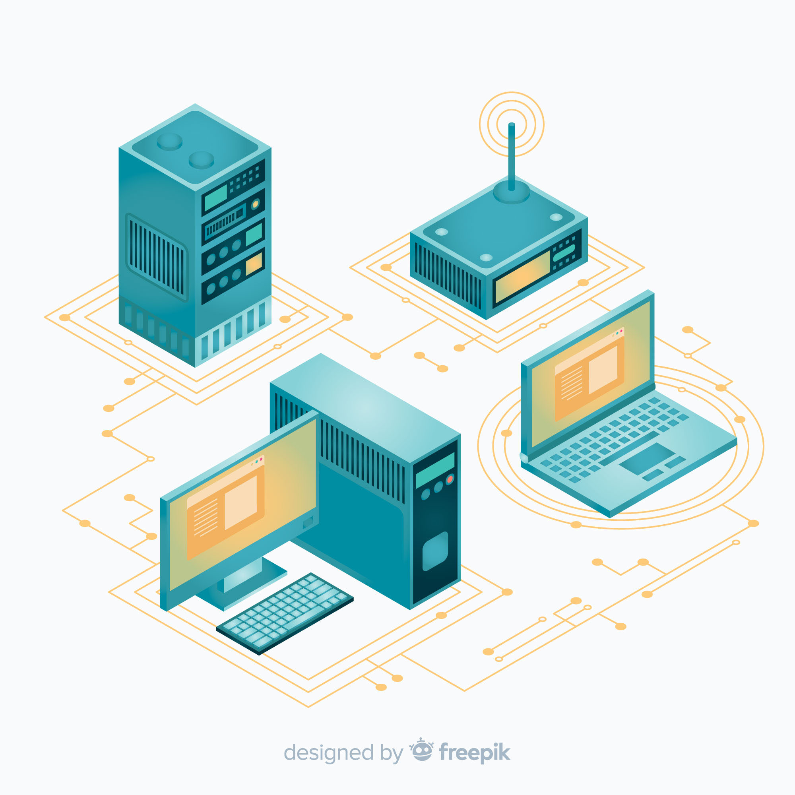

- Definición. Las redes de computadoras permiten la interconexión de diferentes dispositivos para compartir información y recursos, facilitando la comunicación entre ellos.
- Primeras conexiones. En los años 60, ARPANET, creada por el Departamento de Defensa de los EE.UU., fue la primera red en implementar el protocolo TCP/IP, sentando las bases de internet.
- Evolución. Durante los 80 y 90, las redes de computadoras experimentaron un crecimiento exponencial, con la aparición de redes locales (LAN) y el internet comercial.
- Tipos de redes. Existen varios tipos de redes como LAN, MAN y WAN, que varían en tamaño y propósito. Las redes inalámbricas (Wi-Fi) han transformado el acceso a internet y la movilidad.
- Impacto actual. Las redes modernas no solo permiten la conexión a internet, sino que también soportan servicios como el almacenamiento en la nube, videoconferencias y streaming de contenido multimedia.
